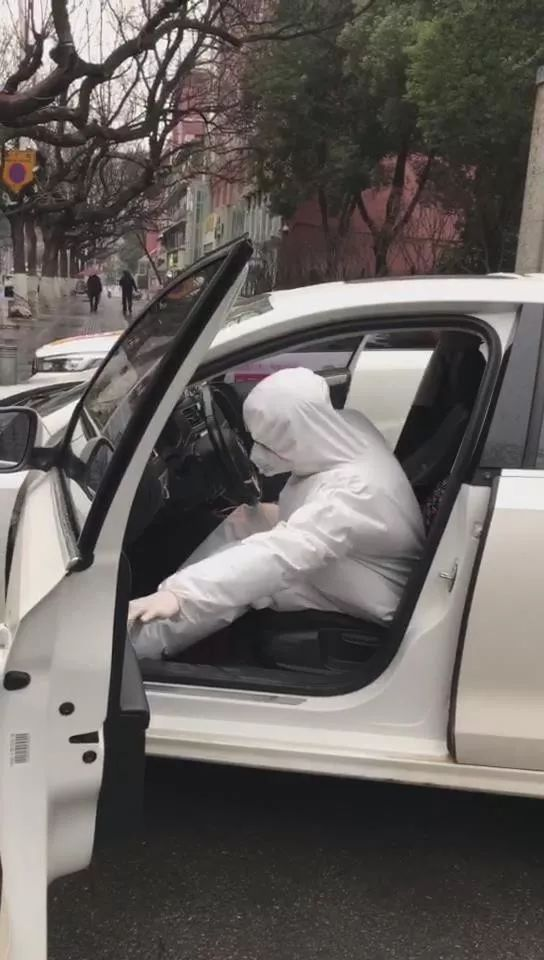
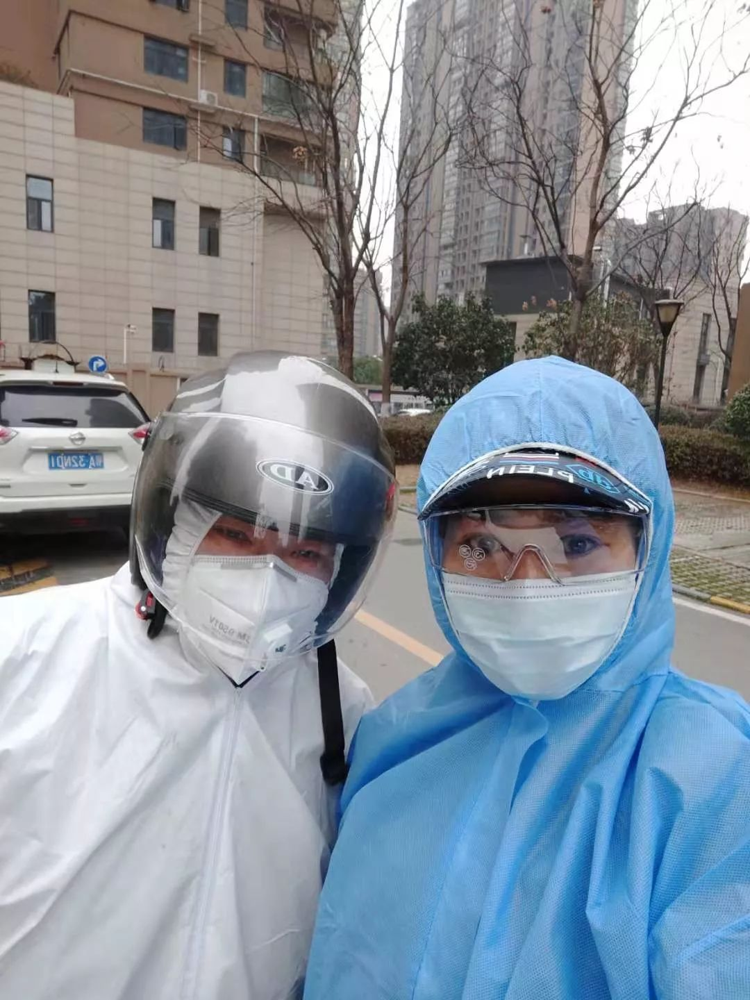

直击武汉：红会掌控物资待发，协和另获捐赠应急
原文链接 备份链接 武汉市已将所有捐赠物资集中统一调配，这有助于物尽其用，但配送效率亟须提升。这几日陆续有社会捐赠物资送到武汉协和医院，但仅有一线医护人员能穿上防护服，很多医用物资仍然紧缺 文 |《财经》 …

疫情爆发以来，武汉市公交、地铁系统相继停运，加之私家车禁行，这座一千万人口的巨型城市，在短时间内，迅速从喧嚣中沉寂下来。曾经繁华、拥堵的武汉街头，如今显得空荡而寂寥。
但仍有一群人活跃在武汉的路面上，他们穿上全身防护服，配备消毒液、口罩等装备，组成了志愿者车队，在各个医院间来回穿梭，免费接送无法出行的一线医护人员。
在安静得不寻常的城市里，志愿者们的车队，组成了武汉的临时动脉，将医护人员输送往前线。同时也见证着每个寻常武汉人的抗疫故事。
我们采访了4位高德打车「医护专车」志愿者。在空荡的街上，他们制造着这座城市为数不多的发动机声，给武汉带来温暖和慰藉。
整理 |**** 邢吟欢
「跟医生说句『加油』，
他能感动好几天」
成冬 37岁 男
我老家黄石的，从武汉开车过去，1小时不到。因为离得很近，经常来，所以我对武汉很熟，大学也在这边读的。我对武汉很有感情。
我是去年结的婚，把根扎在这里。宝宝现在5个多月了，在武汉总医院出生的，现在那里是接收发热病人的重灾区。
武汉人的性格和这个城市的地理位置很像，从武汉出发，不管去哪，都不会特别远，所以它包罗万象，每天接触的都是全国各地的人。
武汉人比较热情，很多人都很自来熟。你外地人，你不会说武汉话？没关系。武汉人不会觉得外地人是来抢他们饭碗的。
所以一开始，这种事发生的时候，武汉人的心态没那么糟，觉得这个事很快就会过去。
在这个事之前，我有时做做代驾，总之是跟开车有关的一些工作，年底代驾生意比较好，所以就不着急回老家，反正一个小时就能到。但没想到发生了这个事，现在回不去了。
有一天早上，我打开我注册的网约车APP，发现很多一两百公里的订单。平时二三十公里就算大单了，一百多公里的，一个月有一两单就很不错了。当时我觉得反常，后来知道，是听说要封城，很多人都慌了。

蜂拥而来的「大订单」，令成冬感到反常，他第一时间截图保存
封城以后，出租车不够，又打不到网约车，很多医护人员只能骑共享单车上下班，然后他们就发现，其实武汉很大。
我当时有个车友群，在招募接送医护人员的志愿者，我就报名了。
武汉这个城市比较开放，不限车不限牌，除了长江大桥，也不限单双号。所以平时上下班高峰很堵的，从武昌到汉口可能要走两个小时，现在20分钟最多了。
我穿着公司发的防护服，不透气，两个小时全身就湿了。那些医生，他们从医院出来的时候，身上也都是汗湿的。
我们小区有个医生，最近一个多星期我都在接他。他的情况比较尴尬，他是独生子女，父母生病了，他又要值班。超市9点多开门，下午4点多关门，他早上7点多上班，晚上八九点下班，根本买不到菜。我就会帮他买菜，社区也会统一采购，送到他家里。他很感动，会给我带口罩、酒精，跟我说一些注意事项。
还有个护士，家住得比较远，离医院20多公里，平时就住在酒店里。家里还有个孩子，她父母身体不太好，那天她要回去送药，打不到车，我就去接她。她告诉我，在照顾病人的时候，他们会对她说：医生加油。
我才知道，其实大部分患者，和医生之间都会互相鼓励。医护人员其实很需要正能量的，像我们这种志愿者去接他们的时候，说上一句加油，他们甚至都会哽咽。

成冬打开车门「通风」
在网上看到，一些临床的医生被感染了，因为他们不做的话，就没人做这个事情了。所以他们一直坚持。
你在路上或者电梯里，如果遇见一个下班的医生，你跟他说一句加油，照顾好自己。他能感动好几天。
现在我每天出车之前要消毒，下车后也要消毒。为了家人，我注意保护好自己。回到家，会先把外衣和鞋子拿到阳台去。
只要回家看见老婆和宝宝，我就觉得没什么遗憾。宝宝以前每天我都要抱的，现在他要抱抱就不行了，我不会接触他的。但是每天还是要看看他。
「他们都说外面危险，
所以我出去当志愿者，没告诉任何人」
李杰 50岁 女
我是宜昌人，今年50岁了，在武汉呆了快30年了。我之前自己开了个公司做些生意，现在生活条件还不错，就在家里收收租，打打麻将，经常也到庙里住一两天，也会做义工，去奉粥什么的。
我1月中旬的时候听到传言，当时也没觉得是个大事。我是22、23号才开始紧张的，因为公交停运，武汉封城了。
我先生和女儿之前去了宜昌外婆家，如果没这个事，他们本来23号是要回武汉过年的，结果回不来了。
大年三十我一个人过，那天我在群里看见有人丢二维码，说是专车志愿者，我就报名了。医生都在一线，我觉得我也应该为他们做点什么。
那个时候天天有人给我打电话，说不要出去。我女儿也天天跟我视频，交代我别出门，说外面很危险。
所以，我没告诉任何人，要做就自己去做。他们知道的话，可能会阻拦我，我也怕家人担心。
刚开始还没有防护服，我就戴了两层口罩。我没什么纠结的，反正自己保护好自己。每天车子都要消毒，从桥上过的时候，我会把车窗都打开，通风，就是挺冷的。
现在我每天要花10来分钟穿防护服，擦拭消毒相对比较麻烦，我一般擦两到三遍，穿的时候特别注意不要接触皮肤。

穿着全套防护装备的志愿者李杰（右）
我们在等单的时候都不下车，觉得外面有风险，大家都坐在自己的车上刷手机。
我接的很多都是女同志，她们的家人，如果不是医护人员，也走得早，回家过年了，就剩下她们一个人留在武汉，跟我一样。
她们从春节到现在都没休息，很多人就一直住在医院。偶尔才回家，就是拿点东西，洗个澡什么的。有人到车上，尽管累的只能倒在那里，不想说话，但还是提醒我一定要注意防护，保护好自己，大家都特别客气。
也有很多女性在做专车志愿者。有一次我送一个医生的时候，看到有其他车的志愿者在送一个发烧的病人，因为大家穿的都是防护服，看不清长相，但是从她的声音我能听出来是个姑娘。

高德打车「医护专车」产品入口
武汉人嘛，平时挺泼辣的，但这个时候都很和气。我们小区，有人说我家里有茼蒿，我想吃萝卜，然后就有人来说，我有萝卜，我来跟你换茼蒿。谁家没有口罩了，别人知道了，就会挂在自家门上，然后在群里说，我家有，挂在门上了，自己来拿吧。
我们都想让病毒早日散去。等这次疫情过了之后，我觉得，一定要珍惜生命，其他事情都可以想开点，日子过得简单一点。
「医生把早餐递给我，说，别嫌弃」
代敏 39岁 男
我是武汉本地人，在武昌造船厂工作，和70岁的父亲一起住。每天朝九晚五，按部就班，下班后就在高德上面跑一下专车。
去年11月底，我母亲过世了，今年的大年三十，就我和父亲两个人在家里，自己做饭吃。按照习俗，初一到初三，不能走亲戚，初四以后才能出去拜年。
所以我提前买了好几千块钱吃的东西，准备春节家里来客人的时候，用来招呼。结果现在只能放在家里，自己慢慢吃了。我跟我老爸说，你在家里呆着，不要出去，家里吃的很多。
我大概12月底的时候，听到了一些消息，然后就有一点关注。那个时候，说心里话，觉得离自己还有点远，没想过会发生在自己身边，像现在这么严重。
后来政府发通知的时候，我还不敢相信这个事情是真的。然后单位就放假了，头几天，我呆在家里看新闻，事情越来越严重，我就在家里呆不住了，想出去做点什么，想出一点力。
报名的时候，我没告诉我父亲，他年纪大了，肯定会担心。但后来出去的时候，我还是告诉他了。他没说什么，就让我把防护措施做好。
我告诉他，口罩我戴了，手套我也戴了，我还有摩托车头盔，就连衣服，我都穿着连体的防护服。虽然有点热，但我都准备好了。车里还放了消毒片。
说完，他就比较放心了，但还是提醒我要注意。

等待接单的代敏
最多的一天，我送了8个医护人员上下班。他们的工作压力很大，每天都在不停的忙，看得出来，有的人很累。我就想给他们提供一点方便，让他们早一点回家。
有一次，我早上六点半出门，7点接了一个人。这是我第二次送他了，他给我带了一瓶牛奶，两个面包。他说，我知道现在外面没有早点卖，你可能还没吃饭，希望你不会因为我是医护人员，而嫌弃这些食物。
这样的事情很多，有人送口罩，有人送饮料。其他专车志愿者也遇到过，他们很关心我们这些接送他们的人。虽然我们是自愿做这个事的，不求回报，但还是很感动。
我其实没想到，会有这么多人来做这个志愿者，冒着风险，免费接送医护人员。两个几百人的大群都满了，有的志愿者接不到人，还会有点遗憾，开玩笑说：今天生意不好啊。
「他们从死神手里抢人」
刘伟 30岁 男
我是武汉本地人，从小到大一直在武汉，家人都在这，家里还有个三岁的女儿。今年春节本来计划和家里人去重庆旅游。
一月中旬就听到一些传言，当时也没太当回事，因为还只是传言。20号以后，就开始紧张了，在手机上看到有新闻报道，微信、朋友圈都在说。那时我就买了口罩和84消毒液放在家里了。
封城之后，我听说在招募志愿者，接送医护人员，我就报名了。你说危不危险，我当时没想那么多，看着报名的人很多，我就想，如果自己被选上了，就好好做这件事。因为躲在家里，疫情也不会过去。
刚开始报名的时候，家里人是不支持的，主要是担心防护。我选上之后，出去跑了一两天，公司一开始就给我们发了防护服和口罩，措施都做得很到位，慢慢家里人也就接受了。
今天早上出来到中午12点，接了6个，一天能接送9到10个。有的早上六七点就要上班，晚上很晚才回家，我接过最晚的一位，接近12点才回家。有的人住得很远，我上午接了一个，差不多快50公里，跨了两个区。

「医护专车」的车辆和司机均进行了全面安全防护
我问过一个医护人员，你怕不怕？他说，这是我的责任，我们现在是从死神手里抢人，能抢一个是一个。
医院床位紧张，其实他们都很着急。
武汉的每个人都在努力。不管是医生、志愿者车队，还是街道工作人员，还是环卫，每个人都在付出。
我是一个公司职员，原来一直是朝九晚五的，下班就陪女儿。我女儿三岁了，现在她每天都要找爸爸，因为我最近总是不在家，她还没起床我就出门了，有时候回来比较晚，她都睡了。
我只有偶尔才能刚好碰到她，她还太小，理解不了复杂的疫情，我只告诉她：
「爸爸在做一件非常有意义的事。」
没看够？
长按二维码关注《人物》微信公号
更多精彩的故事在等着你

原文链接 备份链接 武汉市已将所有捐赠物资集中统一调配，这有助于物尽其用，但配送效率亟须提升。这几日陆续有社会捐赠物资送到武汉协和医院，但仅有一线医护人员能穿上防护服，很多医用物资仍然紧缺 文 |《财经》 …
原文链接 备份链接 各方资源和关注的焦点是武汉，但在周边16座也因疫情而被封闭的城市里，他们正在经历着什么 文 |《财经》记者 房宫一柳 宋玮 黎诗韵 管艺雯 陈晶 余洋洋 实习生 马可欣 张凡 编辑 | 宋玮 1月24日，农历鼠年除夕 …
原文链接 备份链接 武汉第一批七家定点医院医用物资也存在短缺 防疫物资今日抵达汉口，明日有望缓解 本文首发于南方人物周刊 文 | 本刊记者 徐梅 赵蕾 张宇欣 编辑 | 周建平 蒯乐昊 全文约3479字，细读大约需要9分钟 有的市属一 …
原文链接 备份链接 按规定，他们每接一次病人，都要全车消毒、销毁防护服，不然可能会成为新的传染源。但现实情况是，他们全站连一套防护服都没了。除夕夜里两点，他没有睡觉，发了这半年里唯一一条不是关于女儿的朋友圈，是一条物资的求助。他告诉《人 …
原文链接 备份链接 数据来源：腾讯新冠肺炎疫情实时追踪 截至2月3日早上7时， 全国新冠肺炎确诊个案16615例， 武汉确诊个案5142例。 根据1月31日湖北省疫情新闻发布会， 截至30日24时， 武汉地区共有6万余名医务工作者参与救 …